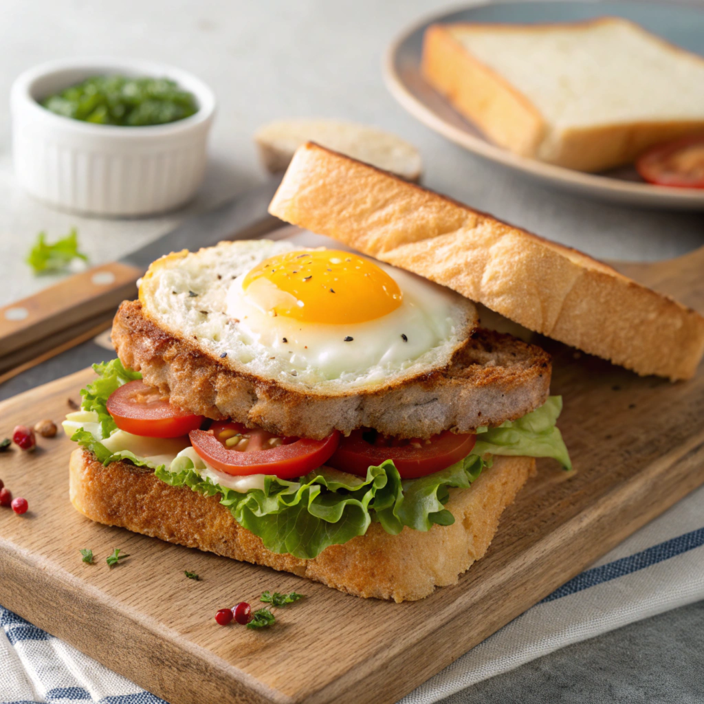
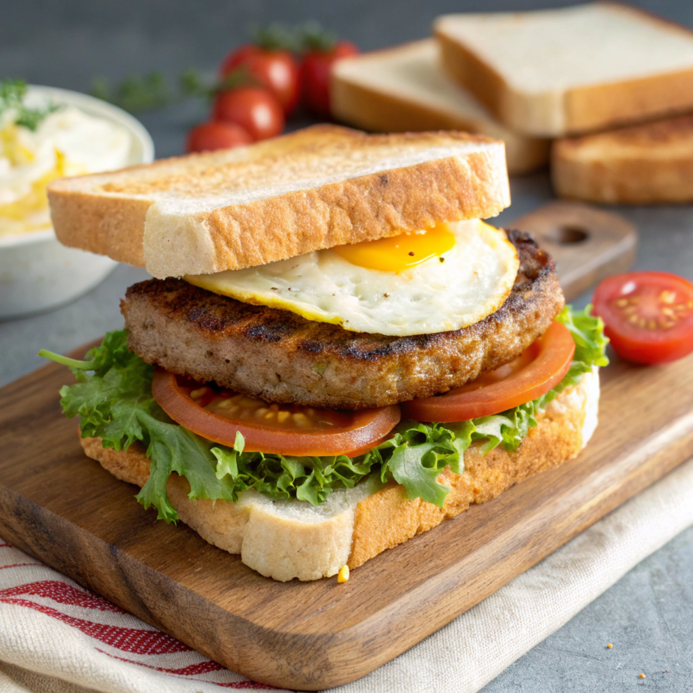

店長溫馨推薦

豬排蛋三明治
嚴選國產豬排，搭配美生菜、牛番茄、黃瓜、起司與現煎雞蛋，層層堆疊新鮮美味。特別塗抹福源花生醬，增添濃郁香甜風味，並佐以清爽沙拉平衡口感。每一口都能品嚐到炭烤吐司的酥脆與豐富內餡，是兼具營養與飽足感的經典選擇，絕對讓您愛不釋口！

豬排蛋三明治
選用國產香腸，搭配美生菜、牛番茄、黃瓜、起司與香煎雞蛋，打造豐富又多層次的口感。特別加入福源花生醬，增添濃郁香甜與鹹香風味，搭配清爽沙拉讓口味更平衡。酥脆的炭烤吐司包覆滿滿內餡，每一口都飽滿紮實，讓人回味無窮，是經典早餐的不二之選！

海鹽牛五花三明治
嚴選美國進口牛五花，經海鹽簡單調味後煎製入味，搭配新鮮美生菜、牛番茄、黃瓜、香濃起司與煎蛋，堆疊出豐富層次。塗抹經典福源花生醬，增添鹹甜交融的獨特風味，並佐以清爽沙拉平衡口感。炭烤吐司外酥內軟，完美包覆豐滿餡料，每一口都充滿香氣，是饕客必嚐的美味享受！